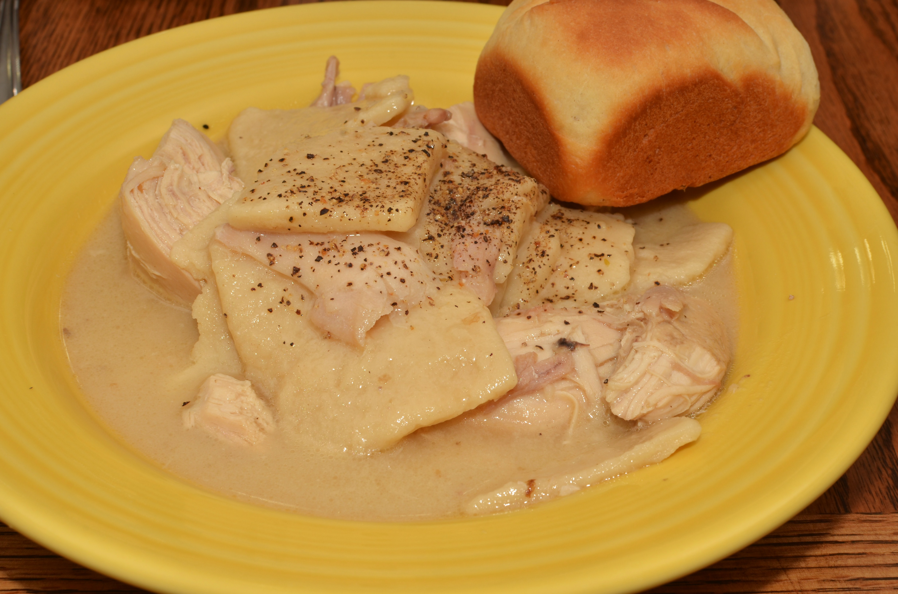

Chicken and Dumplings
Origin: Southern United States
Chicken and dumplings is a soup that consists of a chicken cooked in water, with the resulting chicken broth being used to cook the dumplings by boiling. A dumpling—in this context—is a biscuit dough, which is a mixture of flour, shortening, and liquid (water, milk, buttermilk, or chicken stock). The dumplings are either rolled out flat, dropped or formed into a ball. It is a popular comfort food dish, commonly found in the Southern and Midwestern United States, that is also attributed to being a French Canadian meal that originated during the Great Depression.
Ingredients
- ½ tablespoon olive oil
- 1 cup diced onion
- ½ cup diced carrot
- cup diced celery
- 1 bay leaf
- 4 cups low-sodium chicken broth
- 1 pound boneless, skinless chicken thighs
- 1 pound bone-in chicken breasts, skin removed
- ½ teaspoon thyme (Optional)
- ½ teaspoon dried marjoram
- 1 teaspoon salt (Optional)
- ¼ teaspoon freshly ground black pepper
- 2 tablespoons unsalted butter, softened
- 2 tablespoons all-purpose flour
- salt and ground black pepper to taste (Optional)
- ½ cup frozen petite peas
- ½ cup frozen cut green beans
- 1 cup all-purpose flour
- 1 teaspoon baking powder
- ½ teaspoon salt (Optional)
- 2 tablespoons cold unsalted butter
- 1 tablespoon chopped fresh flat-leaf parsley
- ½ cup buttermilk
Instructions
- Step 1
Pour the olive oil into a multi-functional pressure cooker (such as an Instant Pot®) and select the Saute function. Cook onion, carrot, celery, and bay leaf until the vegetables are soft and the onion has turned translucent, about 5 minutes.
- Step 2
Add chicken broth, chicken thighs, chicken breasts, thyme, marjoram, salt, and pepper. Close and lock the lid. Select high pressure according to manufacturer's instructions; set timer for 9 minutes. Allow 10 to 15 minutes for pressure to build.
- Step 3
Release pressure carefully using the quick-release method according to manufacturer's instructions, about 5 minutes. Carefully remove the chicken pieces with tongs and place them in a bowl to cool slightly; discard bay leaf.
- Step 4
Mash butter with the flour to make a smooth paste; set aside.
- Step 5
Combine flour, baking powder, and salt in a bowl for the dumplings. Cut in cold butter until mixture is the texture of cornmeal. Stir in parsley and set aside.
- Step 6
Shred cooled chicken and return to the pot. Taste the broth and adjust the seasoning if needed. Add peas and green beans. Stir in the flour-butter paste. Select Saute function to bring broth back to a boil.
- Step 7
Pour buttermilk into the dumpling mixture and stir until combined. Drop the dumpling dough by heaping spoonfuls on top of the stew; a small cookie scoop works well.
- Step 8
Cover pot with the lid, leaving the steam vent open. Select Slow Cooker function and simmer on Low, covered, until dumplings are cooked through, 10 to 12 minutes. A skewer inserted in the center of a dumpling should come out clean.